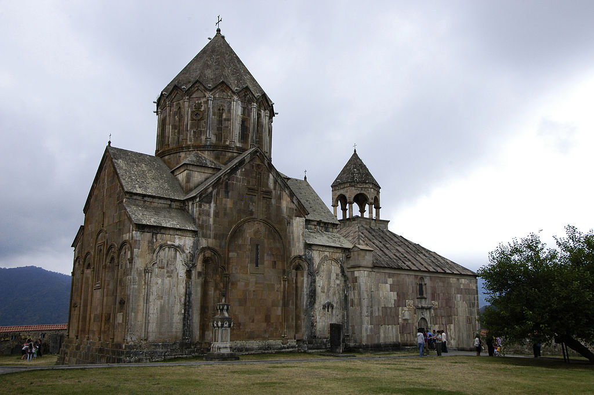

Դադիվանք, հայկական առաքելական միջնադարյան վանական համալիր Արցախի Շահումյանի շրջանի Դադիվանք գյուղում՝ Դադիվան լեռան լանջին՝ Թարթառ գետի ձախ ափին։ Ավանդության համաձայն՝ եկեղեցին հիմնվել է Քրիստոսի առաքյալներից Թադևոսի հետևորդ Դադեի կողմից 1-ին դարում։ Դադիվանքի վերանորոգման շրջանակներում իրականացված պեղումների ընթացքում՝ 2007 թվականի հուլիսի 21-ին, վանական համալիրի եկեղեցիներից մեկի խորանի տակ գտնվել են սուրբ Դադե առաքյալի մասունքները 12-րդ դարում Մխիթար Գոշը միառժամանակ այստեղ է բնակվել և աշխատել է իր «Դատաստանագրքի» վրա։ Վանական համալիրում եղել են տարբեր շինություններ. 2 ժամատուն, 2 հնագույն եկեղեցի, միաբանական խցեր, հյուրատուն, գործատուն, գրատուն, և այլն, որոնց հիմնական մասը կառուցվել է Զաքարյան իշխանապետության տարիներին։ Դադիվանքի կենտրոնական կառույցը սուրբ Աստվածածին կաթողիկեն է, որը 1234 թվականին կառուցել է Հաթերքի իշխանուհի Արզու-Խաթունը՝ ի հիշատակ իր ամուսնու՝ Վախթանգ Վախթանգյանի և երկու որդիների՝ Հասանի և Գրիգորի, որոնցից ավագը նահատակվել է թուրքերի դեմ պատերազմելիս։ 1993 թվականի մարտի 31-ին Դադիվանքն ազատագրվել է, 1994 թվականին՝ վերաբացվել, իսկ 1997 թվականից սկսվել են վերանորոգման աշխատանքները։
